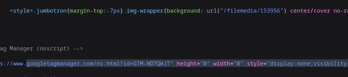

vives.be: maakt gebruik van 5 externe stylesheets en een style tag:
<noscript><style>form.antibot * :not(.antibot-message) { display: none !important; }</style>
miras.be: maakt gebruik van 5 externe stylesheets o.a Boostrap en heel soms <style> of inline
www.vrt.be/vrtnws/nl/: 3 externe stylesheets o.a Tailwind CSS en een hoop styles via de <style> tag, ook soms via inline.